Ports and Protocols
Table of Contents
Design and Planning
In order to examine how communication succeeds even when networks are imperfect and the significance of TCP (Transmission Control Protocol), UDP (User Datagram Protocol), and ICMP (Internet Control Message Protocol), Cisco Packet Tracer was used to create a LAN with two endpoints and one switch in order to determine what distinguishes TCP from UDP.
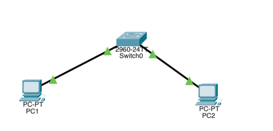
The PCs and switches were connected with copper straight-through cables on the following ports:
- PC1 FastEthernet0 → Switch FastEthernet0/1
- PC2 FastEthernet0 → Switch FastEthernet0/2
After handling the Level 2 connections, the IP addresses were manually assigned on both endpoints. Both devices operated on subnet mask 255.255.255.0. PC1's IP was assigned to 192.168.10.10 and PC2's IP was assigned to 192.168.10.20. To verify connectivity, PC2 was pinged from PC1.
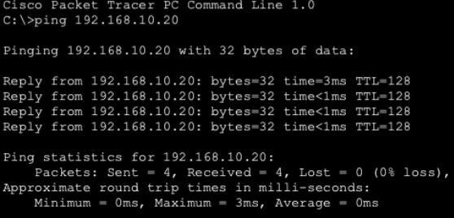
This ping was handled by OSI Layer 3 using ICMP, not TCP or UDP. This means that ping is not sufficient evidence to prove TCP reliability, since the TCP protocol is not involved at all when pinging a device on a LAN.
In order to test TCP connectivity, Packet Tracer was switched to Simulation Mode, and an http request was sent to PC2 by using PC1's web browser to navigate to http://192.168.10.20 (PC2's IP address). To only show TCP traffic, a filter was applied in Packet Tracer's simulation settings to filter for TCP.
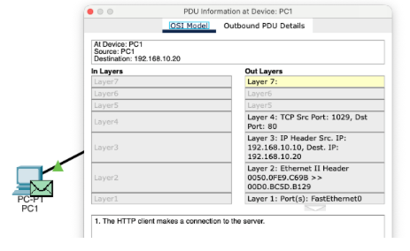
- Flag: 0b00000010
- Sequence Number: 0
- Acknowledgement Number: 0
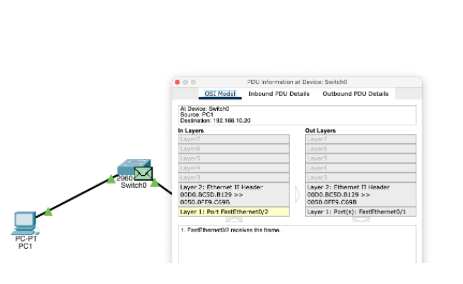
- Flag: 0b00010100
- Sequence Number: 0
- Acknowledgement Number: 1
After the TCP packets were captured, the same test was repeated, except the traffic was filtered for UDP.
Technical Development
In the previous activity, Packet Tracer was used to observe how TCP detects loss, confirms delivery, and retransmits missing segments, and how UDP does not have any of these traits. In this activity, this behavior was observed in the real world using an Ubuntu VM.
Part 1: Prediction before testing:
-
TCP is connection oriented because both parties need to establish a shared state before data flows and break it down after data flows. Both the transmitting and receiving device must communicate and synchronize prior to any data transfer occurring.
-
UDP lacks the handshake that TCP mandates and requires no coordination between sender and receiver. UDP simply looks at the destination IP and port to transfer data. This means that UDP's speed is much greater than that of TCP, but it lacks its reliability.
-
If data is sent via UDP and it never arrives, nothing happens. UDP has no measures of confirming packet delivery or even knowing in the first place if data was received. If a packet is dropped, then UDP just moves on to the next packet and acts like nothing happened.
-
TCP requires more overhead since TCP needs to establish a link with the receiving device prior to any data being transferred. This requires extra bandwidth, processing power, and takes more time.
Part 2: Observing Listening Sockets
In this section, the services Ubuntu is ready to accept and how TCP and UDP sockets appear before communication begins was observed. Computers can have listening sockets, which wait for incoming traffic, and established connections which actively communicate.
To view listening TCP ports, ss -tln was run.
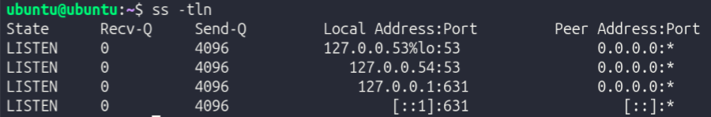
Next, to identify a specific process using a port, ss -tlpn was run.
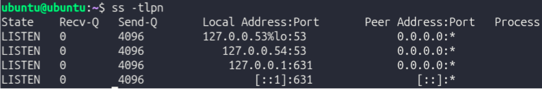
At the time of documenting, no process was using port 22, which suggests that it is closed. While the port exists, it is not listening.
Next, to view listening UDP ports, ss -uln was run.
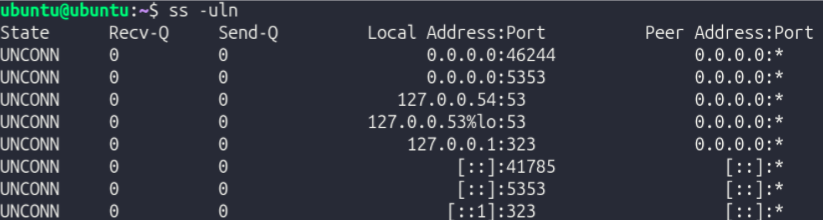
Compared to TCP, UDP sockets show "UNCONN" (unconnected) instead of "LISTEN". This means that instead of listening like TCP ports, inactive UDP ports are disconnected.
Now that the fundamentals of TCP and UDP were established, an experiment where TCP and UDP traffic was created and observed to visualize how Ubuntu represents them.
3 terminal sessions were used:
- Terminal A → Listener
- Terminal B → Sender
- Terminal C → Inspection (
ss)
TCP Experiment
To begin, the installation of nc was confirmed with which nc. It was located at /usr/bin/nc.
Next, in Terminal A, nc -l 5000 was run to start a TCP listener on port 5000.
To confirm this, in Terminal C, ss -tln was run. Among other things, it returned LISTEN 0 0 0.0.0.0:5000 0.0.0.0:*, confirming that port 5000 is listening for TCP traffic.
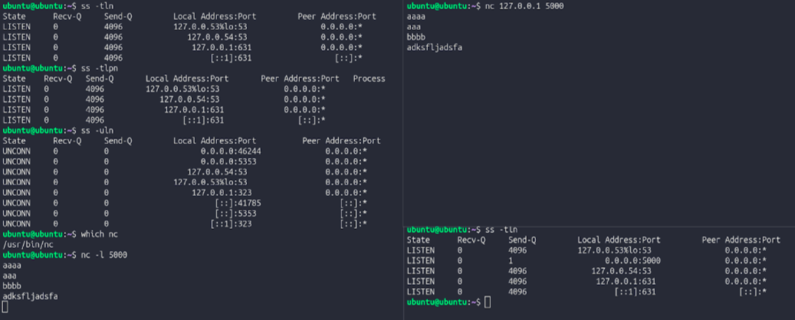
In terminal B, nc 127.0.0.1 5000 was run to establish a TCP connection. When a message was typed, it appeared in Terminal A, proving that a TCP connection was established. While the TCP connection was established, ss -tn was run in Terminal C. It returned ESTAB 0 0 127.0.0.1:5000 127.0.0.1:xxxxx.
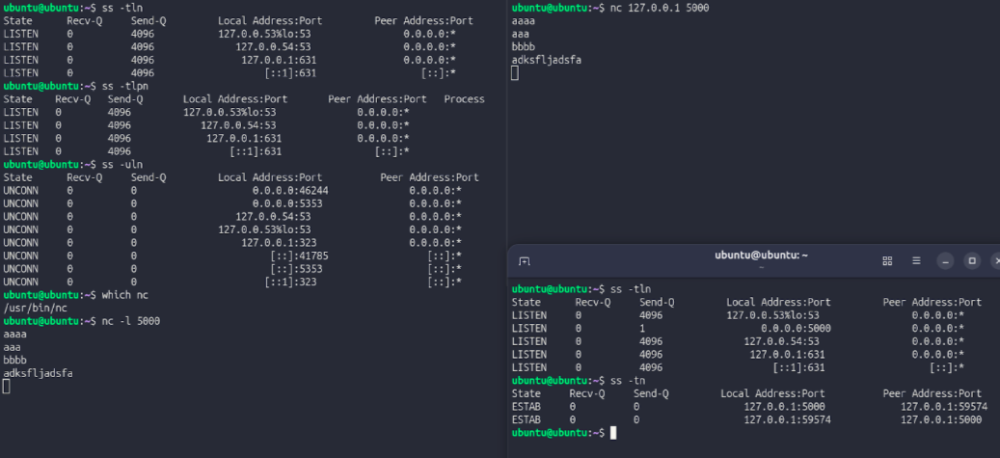
When the TCP session was stopped and ss -tn was run again, ESTAB dissappeared, proving that TCP port 5000 changed from having an established connection to being in a listening state.
UDP Experiment
TO start a UDP listener in Terminal A, nc -u -l 6000 was run. At this point, no handshake has occurred. To complete the handshake, in Terminal B, nc -u 127.0.0.1 6000 was run. After doing so, messages typed in Terminal B showed up in Terminal A, proving that a handshake was completed. This was verified by running ss -uln in Terminal C, which returned UNCONN 0 0 0.0.0.0:6000 0.0.0.0:*.
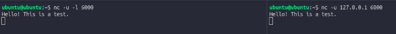
UDP sockets never show ESTAB because that state only exists in TCP, which actually forms a connection. UDP shows UNCONN instead, meaning the socket is bound to a port but has no specific device it connects to. This is because UDP doesn't create any persistent connection state. Every packet is self-contained and sent independently, so the operating system does not actively monitor whether the communication succeeds or fails.
In the previous two experiments, it was observed how data finds its destination, survives packet loss, and reaches the correct application via port numbers. Next, post-transfer protocols were explored in Ubuntu.
To inspect an HTTP transaction, curl -I http://example.com was run.
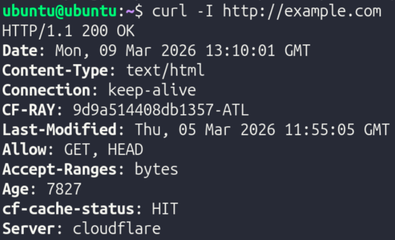
Here, the protocol HTTP (hyper text transfer protocol) was used.
To compare with HTTP, an HTTPS transaction was inspected with curl -I https://example.com.
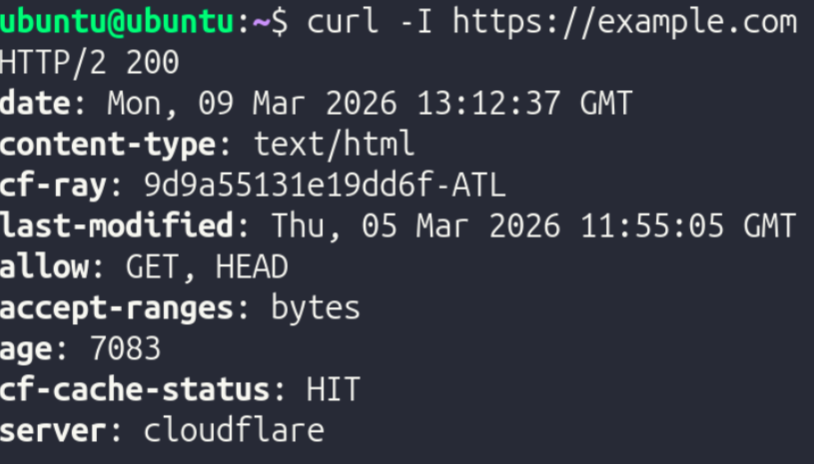
Here, the protocol HTTPS (hyper text transfer protocol secure) was used. HTTPS employs encryption, while HTTP does not.
To further explore encryption behavior directly, openssl s_client -connect example.com:443 was run.
Presentation Layer (Layer 6) Investigation
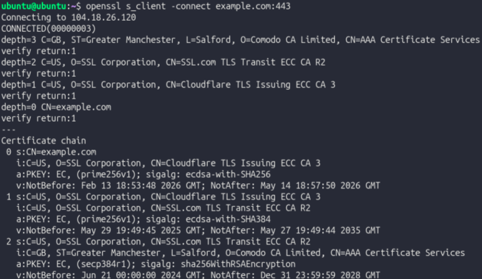
When the command is run, before data transfer starts, a TLS handshake is happening. The client and server establish communication speed, encryption protocols, and other data pertaining to specific methods of communication. This is not Layer 4 behavior, since TLS operates on Layer 6 (Presentation). TLS is used to add privacy and encryption to data transfer, and must occur before application data is sent so the server can decipher encrypted data properly. Even though TLS encrypts data, it does not replace TCP. Instead, it operates on top of it and they work together to provide encrypted, reliable data communication.
| Protocol | Layer | Purpose |
|---|---|---|
| TCP | 4 | Breaks data into packets, ensures they arrive, and arranges them in order |
| TLS | 6 | Encrypts connections and handles authentication via certificates |
| HTTP | 7 | Facilitates communication between browsers and servers, but is unencrypted and communicates in plain text |
| HTTPS | 7 | Encrypted version of HTTPS used for secure communication between browsers and servers |
| DNS | 7 | Converts host names into IP addresses; akin to a phone book |
Testing and Evaluation
After analyzing each OSI layer, the entire stack was analyzed as one cohesive system.
Part 1: HTTP vs HTTPS
Curl with HTTP and output monitored with ss -tn:
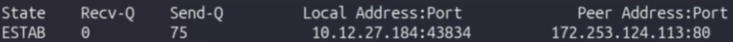
Curl with HTTPS and output monitored with ss -tn:
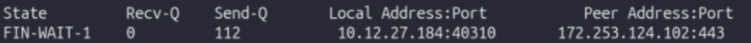
While HTTP runs on port 80, HTTPS runs on port 443. The difference in states was only due to HTTPS's connection details being screenshotted as the connection was closing. When moving from HTTP to HTTPS, nothing changed at the application and transport layers. The only difference (besides port) was that in an HTTPS connection, TLS is introduced between HTTP and TCP. When TCP Opens the connection, TLS steps in and negotiates encryption and a shared session key. Once TLS does what it needs to do, HTTP (now HTTPS) communicates the data.
Part 2: DNS as a Supporting Application Protocol
To explore DNS, nslookup example.com was run, returning the public IPv4 and IPv6 addresses associated with the domain example.com.
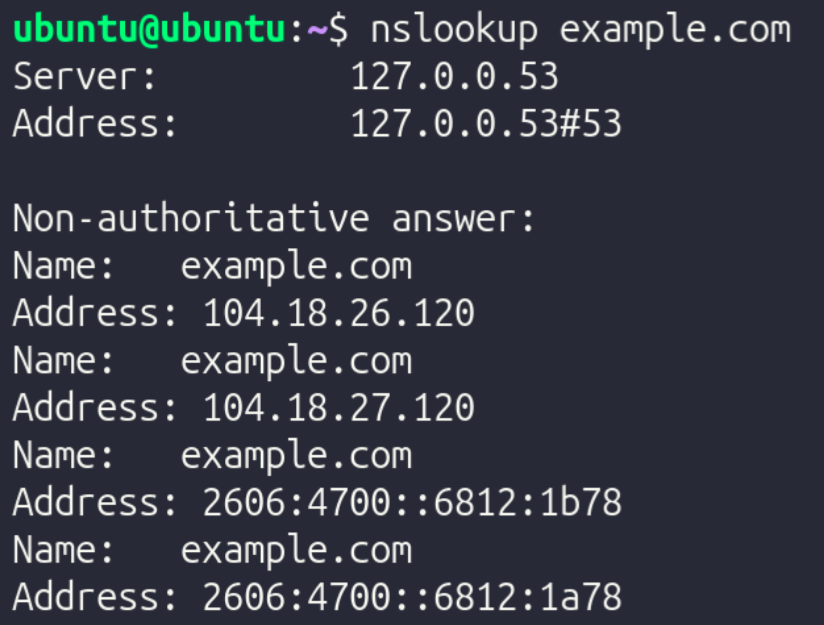
DNS typically uses port 53 for both TCP and UDP. However, a majority of the time, DNS uses UDP since DNS queries are very tiny and consist solely of one packet transmitted and one packet received. Establishing a TCP connection just to send and receive one packet is complete overkill, which is why UDP is almost always used for DNS queries. While it mostly uses UDP, DNS switches to TCP when the queries are very complex and are cryptographically encrypted. However, this only happens in ultra-high security environments.
Part 3: Remote Access Via SSH
SSH is a very common tool used in server environments since it allows for administrators to access the terminal of a remote endpoint on a LAN. To test SSH connectivity and inspect its properties, the following steps were taken:
- Run
ip addrto find the device's IPv4 address - Connect to the local machine via SSH with
ssh [username]@[ip address]. The VM's username was "Ubuntu" and its IP was 10.12.27.184, so the command wasssh ubuntu@10.12.27.184
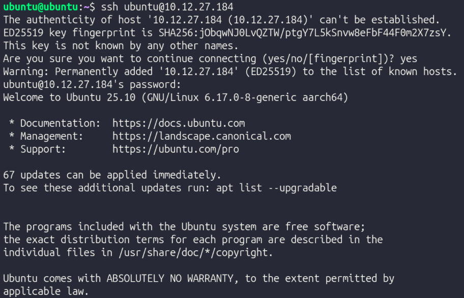
- In another terminal window, run
ss -tnto inspect TCP ports.
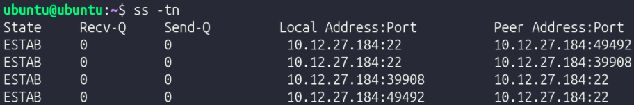
- Exit SSH with
exitor Ctrl + D
Part 4: Secure File Transfer
To securely transfer files over the LAN, scp can be used by specifying the file/directory to be transferred, the destination user & hostname, and the directory to which the file should be transferred on the recipient device.
To create a new file to test this out, the command echo "Layered Networking Test" > stacktest.txt was run to create a file named stacktest.txt which contains the text "Layered Networking Test".
To transfer it with SCP, the command scp stacktest.txt ubuntu@ubuntu.local:/home/ubuntu/ was run (username and hostname were both "ubuntu").
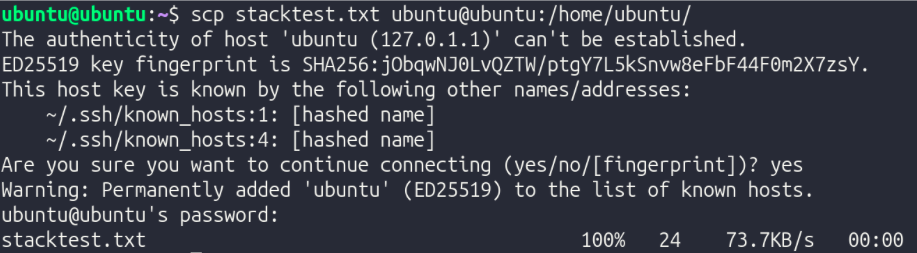
SCP piggybacks off of SSH, as it's just SSH with a file transfer instruction added on. Therefore, like SSH, SCP uses TCP since SSH demands a reliable, ordered stream of data to function. Missing/unorganized packets would ruin the connection. Also, since SCP is based on SSH, it has TLS-based encryption, making sure that the file is sent securely and safely. In SCP, Layers 3, 4, 5, 6, and 7 are all used.
Reflection
TCP vs ICMP Reflection: TCP detects loss through sequence numbers and acknowledgment timers — every segment is numbered, and if an acknowledgment doesn't return in time, the segment is retransmitted. This was visible in the Packet Tracer captures, where flag and sequence number fields in the TCP header confirmed delivery step by step. Dropping a segment does not permanently break the connection because TCP retransmits automatically at Layer 4, invisible to the application above. ICMP behaves differently because it operates at Layer 3 with no retransmission mechanism — the ping test confirmed connectivity but proved nothing about TCP reliability since TCP was never involved. Every acknowledgment and retransmission consumes bandwidth that carries no application data, which is the direct cost of guaranteed delivery.
TCP vs UDP Reflection: TCP is connection-oriented, as it establishes a three-way handshake before data flows, and every segment is tracked with sequence numbers and acknowledgments. This is reflected in ss -tn showing ESTAB during the netcat experiment on port 5000. UDP lacks this feature and sends packets independently with no handshake and no tracking. This is why ss -uln shows UNCONN, since the kernel has no connection state to maintain. UDP avoids reliability intentionally because the overhead TCP requires is a liability for lightweight workloads like DNS. Overhead matters because every acknowledgment costs bandwidth, and the wrong protocol for a workload means paying costs that return no benefit.
OSI Layers 4, 5, 6, 7, and 8 Reflection:
Layer 4 delivers data reliably but says nothing about security or application behavior, which is exactly why the layers above it exist. Layer 5 manages session state. An example of this is the TLS handshake observed in the openssl s_client -connect example.com:443 output, since it shows the devices negotiating encryption parameters and authenticating the server before any data moves. Layer 6 handles encryption and formatting, ensuring the data traveling over the established TCP connection is unreadable in transit. Layer 7 is where application behavior finally occurs, as curl issues its HTTP request and processes the response with no visibility into the session negotiation or encryption beneath it. TCP reliability and TLS encryption are distinct guarantees, one ensures delivery, the other ensures privacy, and neither substitutes for the other.
SSH Reflection: SSH requires TCP because it depends on a reliable, ordered byte stream, as missing or reordered segments would corrupt the encrypted session immediately. This is why ss -tn showed an ESTAB connection during the SSH test. Encryption is not handled at Layer 3 because IP is only responsible for routing packets to their destination and has no awareness of sessions, application context, or what the payload contains. This makes it the wrong place to apply confidentiality. HTTP does not provide its own reliability because it delegates that entirely to TCP beneath it — HTTP assumes the stream it receives is complete and ordered, and if TCP weren't there, it would have no way to recover from loss. Without port numbers, the kernel would have no mechanism to direct incoming traffic to the correct process, and every application on the machine would be competing for the same undifferentiated stream. Remote access and file transfer are separated because they solve different problems: SSH manages an interactive session while SCP adds a file transfer instruction on top of it, and keeping them distinct means each can be reasoned about and secured independently. When SCP runs, Layer 3 routes the packets across the network, Layer 4 ensures every segment of the file arrives in order, Layer 6 encrypts the payload inside the SSH session so the file is never exposed in transit, and Layer 7 carries the SCP instruction that specifies what to move and where.